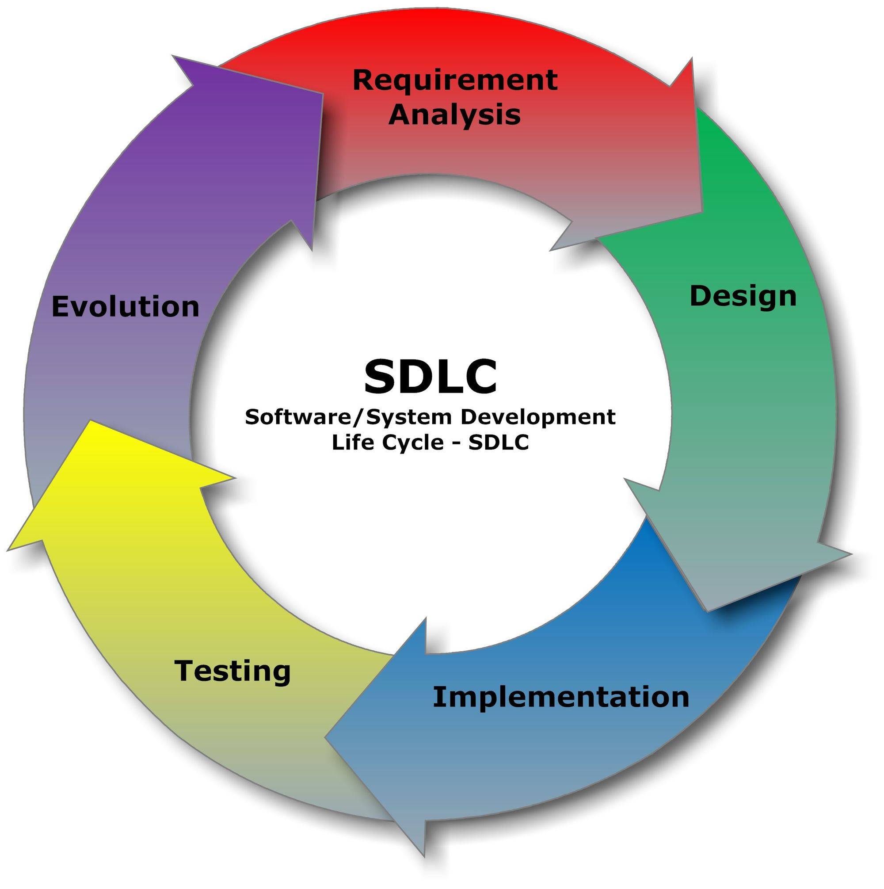
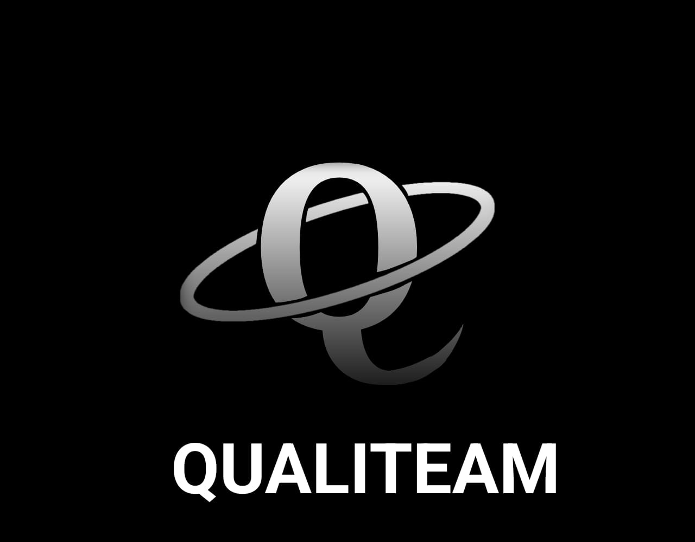

Introducción
Este sitio web está dedicado a la Gestión de Calidad de Software. Aquí encontrarás información valiosa sobre los fundamentos de calidad, el ciclo de vida del desarrollo de software (SDLC), metodologías ágiles, recursos de aprendizaje y herramientas de calidad. Nuestro objetivo es proporcionarte conocimientos y recursos para mejorar la calidad del software que desarrollas.

 Fundamentos de calidad
Conoce qué hace que un software sea confiable y cumpla con las necesidades de sus usuarios.
Fundamentos de calidad
Conoce qué hace que un software sea confiable y cumpla con las necesidades de sus usuarios.
 Metodologías ágiles
Explora formas colaborativas e iterativas de desarrollar software y mejorar su calidad.
Metodologías ágiles
Explora formas colaborativas e iterativas de desarrollar software y mejorar su calidad.

Ciclo de vida (SDLC) Descubre las etapas que organizan la planificación, el desarrollo y el mantenimiento del software. Recursos y aprendizaje
Encuentra recursos educativos, actividades y consejos para seguir aprendiendo.
Recursos y aprendizaje
Encuentra recursos educativos, actividades y consejos para seguir aprendiendo.
 Comparar Metodologías
Compara diferentes metodologías ágiles para tomar decisiones informadas.
Comparar Metodologías
Compara diferentes metodologías ágiles para tomar decisiones informadas.
 Preferencias Metodológicas
Encuesta interactiva sobre metodologías y modelos más adecuados para tus proyectos.
Preferencias Metodológicas
Encuesta interactiva sobre metodologías y modelos más adecuados para tus proyectos.

Sobre Nosotros Conoce más sobre nuestro equipo. Formulario de Contacto Envíanos tus consultas o comentarios.